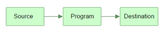

原文链接 作者: Jakob Jenkov 译者: 李璟(jlee381344197@gmail.com) 校对：方腾飞
在这一小节，我会试着给出Java IO(java.io)包下所有类的概述。更具体地说，我会根据类的用途对类进行分组。这个分组将会使你在未来的工作中，进行类的用途判定时，或者是为某个特定用途选择类时变得更加容易。
输入和输出 – 数据源和目标媒介
术语“输入”和“输出”有时候会有一点让人疑惑。一个应用程序的输入往往是另外一个应用程序的输出。那么OutputStream流到底是一个输出到目的地的流呢，还是一个产生输出的流？InputStream流到底会不会输出它的数据给读取数据的程序呢？就我个人而言，在第一天学习Java IO的时候我就感觉到了一丝疑惑。（校对注：输入流可以理解为向内存输入，输出流可以理解为从内存输出）
为了消除这个疑惑，我试着给输入和输出起一些不一样的别名，让它们从概念上与数据的来源和数据的流向相联系。
Java的IO包主要关注的是从原始数据源的读取以及输出原始数据到目标媒介。以下是最典型的数据源和目标媒介：
- 文件
- 管道
- 网络连接
- 内存缓存
- System.in, System.out, System.error(注：Java标准输入、输出、错误输出)
下面这张图描绘了一个程序从数据源读取数据，然后将数据输出到其他媒介的原理：

流
在Java IO中，流是一个核心的概念。流从概念上来说是一个连续的数据流。你既可以从流中读取数据，也可以往流中写数据。流与数据源或者数据流向的媒介相关联。在Java IO中流既可以是字节流(以字节为单位进行读写)，也可以是字符流(以字符为单位进行读写)。
类InputStream, OutputStream, Reader 和Writer
一个程序需要InputStream或者Reader从数据源读取数据，需要OutputStream或者Writer将数据写入到目标媒介中。以下的图说明了这一点：

InputStream和Reader与数据源相关联，OutputStream和writer与目标媒介相关联。
Java IO的用途和特征
Java IO中包含了许多InputStream、OutputStream、Reader、Writer的子类。这样设计的原因是让每一个类都负责不同的功能。这也就是为什么IO包中有这么多不同的类的缘故。各类用途汇总如下：
- 文件访问
- 网络访问
- 内存缓存访问
- 线程内部通信(管道)
- 缓冲
- 过滤
- 解析
- 读写文本 (Readers / Writers)
- 读写基本类型数据 (long, int etc.)
- 读写对象
当通读过Java IO类的源代码之后，我们很容易就能了解这些用途。这些用途或多或少让我们更加容易地理解，不同的类用于针对不同业务场景。
Java IO类概述表
已经讨论了数据源、目标媒介、输入、输出和各类不同用途的Java IO类，接下来是一张通过输入、输出、基于字节或者字符、以及其他比如缓冲、解析之类的特定用途划分的大部分Java IO类的表格。

转载自并发编程网 – ifeve.com 本文链接地址: Java IO 概述